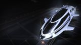

Макс. прыжок с улучшениями
~45 св. лет
Полный перевод на русский. Вернуться в Companion
Orca подходит для исследований: садится на планеты, вмещает полный экспедиционный комплект и, по оценке автора, является самым быстрым большим кораблём в обычном пространстве. Однако двигатель пятого класса и тяжёлый корпус лайнера ограничивают дальность прыжка. Для неспешных путешествий это стильный и комфортный корабль, но по дальности он уступает более дешёвым средним кораблям.

Оценка пригодности корабля от 1 до 100 учитывает его полностью улучшенную сборку и сравнивает её с другими кораблями в этой роли. Подробнее: как оцениваются корабли.
Orca — скоростной пассажирский лайнер Saud Kruger, который неожиданно хорошо подходит для неспешных исследований: он садится на планеты, вмещает ангар планетохода, топливозаборник, два блока авторемонта (AFMU), сканер и всё для комфортного перелёта. Это самый быстрый большой корабль в обычном пространстве. Если хочется путешествовать по галактике на красивом и удобном судне, а не гнаться за дальностью, на нём приятно летать.
Слабое место — дальность. На лайнере с корпусом массой 290 т стоит рамочно-сместительный двигатель (FSD) пятого класса. Корпус рассчитан на перевозку пассажиров, а не на снижение массы, поэтому даже с полным набором инженерных улучшений корабль прыгает лишь примерно на 45 световых лет. Несколько специализированных исследователей летают вдвое дальше и при этом стоят дешевле, занимают среднюю или малую площадку и удобнее в оснащении. Orca нужен большой причал, поэтому пополнить запасы на аванпосте не получится. Для рекордов дальности он не подходит, зато хорош для комфортных путешествий.
Неспешные исследования: живописные маршруты, где важнее сам полёт, короткие и средние экспедиции с полным комплектом и экзобиология рядом с Пузырём. Здесь удобные посадки и просторная кабина полезнее нескольких лишних световых лет.
Что позволяет Orca заниматься исследованиями:
Двигатель пятого класса и тяжёлый корпус лайнера ограничивают дальность после улучшений примерно 45 световыми годами. Это около половины того, что дают куда более дешёвые Mandalay или Phantom. Orca требуется большая площадка, а значит, на аванпостах он не садится. Девяти дополнительных отсеков меньше, чем у некоторых специализированных исследователей. За дальностью, выгодой или свободой посадки лучше взять специализированный корабль; Orca выбирают ради комфорта.
Комфортный корабль с полным комплектом, самый быстрый среди больших в обычном пространстве. Двигатель пятого класса на лайнере массой 290 т ограничивает прыжок примерно 45 световыми годами даже после улучшений. Это около половины дальности более дешёвых средних кораблей, поэтому за главный критерий с весом 35 баллов оценка невысока.
Оценка 63/100 — итог по критериям, важным для исследования. У каждого критерия есть вес (его доля из 100). Баллы по нему зависят от того, как корабль показал себя на фоне остальных. Сумма баллов даёт итоговую оценку.
| Критерий роли | Баллы | Обоснование оценки |
|---|---|---|
| Дальность прыжка с улучшениями | 14/35 | FSD пятого класса на пассажирском корпусе массой 290 т даёт лишь около 45 световых лет с полными улучшениями: «Увеличенная дальность» 5-й ступени, «Управление массой» и усилитель Стражей 5H. Это примерно половина от 85 у Mandalay или 78 у Anaconda, а также меньше, чем у Diamondback Explorer (около 68) и Asp (около 62). Дальность — самый важный критерий роли и явная слабость Orca. |
| Нагрев | 10/15 | «Низкие выбросы» 5-й ступени с «Рассеиванием тепла» на энергоустановке и «Чистая настройка» двигателей снижают нагрев при заправке. Четыре внешних крепления позволяют поставить две теплоотводные катапульты. Нагрев управляемый, но для большого тяжёлого корабля не выдающийся. |
| Запас топлива и автономность | 8/10 | Топливозаборник шестого класса, самый большой для своего отсека, заправляет почти мгновенно. Бак 5C вместе с дополнительным баком 2C увеличивают число прыжков между звёздами. Автономность неплохая, но дистанцию на одной заправке ограничивает дальность прыжка около 45 световых лет. |
| Кабина и обзор | 9/10 | Панорамная кабина лайнера Saud Kruger даёт один из лучших обзоров вперёд и по сторонам. Это удобно и на живописных маршрутах, и при заходе на посадку. |
| Отсеки и крепления | 15/20 | Девять отсеков (6·5·5·5·4·3·2·2·1) вмещают топливозаборник шестого класса, усилитель Стражей 5H, два блока авторемонта, ангар 4H, посадочный двухконтурный щит 5C, сканер и каюту. Комплект полный, но у специализированных исследователей вроде Anaconda отсеков больше, особенно крупных. |
| Удобство и цена | 7/10 | Ранг не нужен, а одна из самых удобных кабин делает долгие перелёты приятными. Но примерно 47,8 млн кредитов за корпус или 65 млн за сборку покупают стиль, а не дальность. Исследовательские корабли стоят меньше и прыгают гораздо дальше. Orca выигрывает в комфорте, но проигрывает по цене за световой год. |
| Взвешенный итог | 63/100 | Эта сумма совпадает с общей оценкой корабля в этой роли. |
Вес критерия отражает приоритеты авторов гайда, а не формулу игры. Длина полосы показывает, какую долю от максимума корабль набрал по этому критерию. Подробнее: как оцениваются корабли.
Таблицы сравнивают корабли именно для исследованийи разделяют их по размеру посадочной площадки. Столбец «Вместимость» показывает суммарную вместимость дополнительных отсеков для сканеров, авторемонта и топлива. Оценка пригодности выставляется по шкале от 1 до 100, как и на остальных страницах.
| Корабль | Класс | «Вместимость» | Плюсы и минусы | Оценка |
|---|---|---|---|---|
| Anaconda | Большая | ~470 т | Выше оценка; автономность; отсекиОбзор из кабины | 94 |
| Caspian Explorer | Большая | ~434 т | Выше оценка; автономность; обзорУдобство и цена | 94 |
| Imperial Clipper | Большая | ~250 т | Отсеки; удобство и ценаДальность прыжка | 63 |
| Orca этот | Большая | ~194 т | — отправная точка для сравнения | 63 |
| Beluga Liner | Большая | ~370 т | Отсеки; автономностьНиже оценка; дальность прыжка | 58 |
Из пяти оценённых кораблей для больших площадок лидирует Anaconda (94). Все соперники в таблице садятся там же, где и Orca, поэтому сравнивать покупку стоит с ними.
| Корабль | Класс | «Вместимость» | Плюсы и минусы | Оценка |
|---|---|---|---|---|
| Mandalay | Средняя | ~154 т | Выше оценка; дальность прыжка; нагревОтсеки и крепления | 96 |
| Krait Phantom | Средняя | ~190 т | Выше оценка; отсеки; нагревУдобство и цена | 93 |
| Asp Explorer | Средняя | ~130 т | Выше оценка; обзор; отсекиДальность прыжка | 86 |
| Krait Mk II | Средняя | ~230 т | Выше оценка; отсеки; удобство и ценаНагрев | 80 |
| Python | Средняя | ~294 т | Выше оценка; автономность; отсекиДальность прыжка | 75 |
| Asp Scout | Средняя | ~74 т | Выше оценка; удобство и цена; нагревДальность прыжка | 70 |
| Type-6 Transporter | Средняя | ~114 т | Выше оценка; удобство и цена; отсекиДальность прыжка | 68 |
| Corsair | Средняя | ~318 т | Удобство и цена; отсекиНиже оценка; дальность прыжка | 58 |
| Type-11 Prospector | Средняя | ~288 т | Автономность; отсекиНиже оценка; дальность прыжка | 55 |
Из девяти оценённых кораблей для средней площадки лидирует Mandalay (96). В исходном сравнении эти корабли названы более дешёвыми, уступающими по показателям и рассчитанными на более тесные площадки; в таблице они относятся к другому классу.
| Корабль | Класс | «Вместимость» | Плюсы и минусы | Оценка |
|---|---|---|---|---|
| Diamondback Explorer | Малая | ~60 т | Выше оценка; нагрев; удобство и ценаОтсеки и крепления | 88 |
| Dolphin | Малая | ~88 т | Выше оценка; нагрев; удобство и ценаДальность прыжка | 80 |
| Diamondback Scout | Малая | ~32 т | Выше оценка; нагрев; удобство и ценаОтсеки и крепления | 74 |
| Imperial Courier | Малая | ~34 т | Выше оценка; дальность прыжка; обзорОтсеки и крепления | 73 |
| Cobra Mk V | Малая | ~110 т | Выше оценка; отсеки; удобство и ценаДальность прыжка | 72 |
| Cobra Mk III | Малая | ~64 т | Выше оценка; обзор; отсекиНагрев | 71 |
| Hauler | Малая | ~26 т | Удобство и цена; дальность прыжкаНиже оценка; отсеки | 62 |
| Adder | Малая | ~30 т | Удобство и цена; автономностьНиже оценка; отсеки | 60 |
| Kestrel Mk II | Малая | ~70 т | Автономность; обзорНиже оценка; удобство и цена | 50 |
Среди девяти оценённых кораблей для малой площадки лидирует Diamondback Explorer (88). Корпуса дешевле и садятся на меньшие площадки, но это уже другой класс.
Orca стоит около 47,8 млн кредитов, это корпус средней ценовой категории без ограничений по рангу. Полноценная исследовательская сборка с полностью улучшенным FSD, топливозаборником, усилителем Стражей, ангаром планетохода и блоком авторемонта (AFMU) обойдётся примерно в 65 млн кредитов.
За эти деньги получаешь комфорт и внешний вид, а не дальность. При том же бюджете Diamondback Explorer, Asp Explorer или даже Mandalay прыгнет гораздо дальше, а кредиты ещё останутся. Orca стоит покупать ради впечатлений от полёта, а не ради выгоды в пересчёте на световой год.
Примерно 65 млн кредитов за удобный, быстрый большой корабль, который садится на планеты, но прыгает на среднюю дистанцию. Специализированные исследователи дешевле и летают дальше. У Orca в цене стиль и кабина, а не рекорды дальности.
Комфортная сборка для путешествий с полным комплектом в девяти отсеках. Начальная использует покупные модули, класс A служит базой для экспедиции, а инженерный вариант облегчает корпус ради прыжка примерно на 45 световых лет, сохраняя топливозаборник, ангар и запасные модули.
| Отсек | Начальная · только покупка | Класс A · без улучшений | С инженерными улучшениями | Примечания |
|---|---|---|---|---|
| Внешние крепления | ||||
| Крепление 1 | 0I Теплоотводная катапульта | 0I Теплоотводная катапульта | G1 Дополнительный боезапас (без экспериментального эффекта) | Необязательно. Дополнительный боезапас даёт больше теплоотводов. Они снимают нагрев при скрытном ходе и помогают сбросить температуру. |
| Крепление 2 | — | 0I Теплоотводная катапульта | G1 Дополнительный боезапас (без экспериментального эффекта) | Необязательно. Дополнительный боезапас даёт больше теплоотводов. Они снимают нагрев при скрытном ходе и помогают сбросить температуру. |
| Крепление 3 | — | 0A Усилитель щита | G5 Усиленная конструкция + Суперконденсаторы | Лёгкий Усилитель щита укрепляет посадочный щит. «Усиленная конструкция» помогает пережить жёсткое касание. |
| Основные модули | ||||
| Обшивка | Лёгкий сплав | Лёгкий сплав | Облегчение 5-й ступени (без экспериментального эффекта) | |
| Энергетическая установка | 5E Энергетическая установка | 5D Энергетическая установка | G5 Низкие выбросы + Рассеивание тепла | Класс D экономит массу. «Низкие выбросы» снижают нагрев при близкой заправке, а «Рассеивание тепла» дополнительно охлаждает установку. |
| Маневровые двигатели | 6E Маневровые двигатели | 6D Маневровые двигатели | G5 Чистая настройка двигателей + Снижение массы | Класса D достаточно: маневровые двигатели экономят массу. «Чистая настройка двигателей» снижает нагрев, а «Снижение массы» добавляет дальности. |
| Рамочно-сместительный двигатель (FSD) | 5E Рамочно-сместительный двигатель (FSD) | 5A Рамочно-сместительный двигатель (FSD) | G5 Увеличенная дальность + Управление массой | Сначала поставь класс A: дальность — слабое место Orca. «Увеличенная дальность» 5-й ступени с «Управлением массой» доводит дальность загруженного корабля примерно до 45 световых лет. |
| Система жизнеобеспечения | 6E Система жизнеобеспечения | 6D Система жизнеобеспечения | G5 Облегчение (без экспериментального эффекта) | Поставь модуль шестого размера класса D и примени «Облегчение», чтобы заметно облегчить лайнер. У системы жизнеобеспечения нет экспериментального эффекта. |
| Распределитель энергии | 5E Распределитель энергии | 5D Распределитель энергии | G3 Упор на двигатели + Снижение массы | Без вооружения хватает класса D. «Упор на двигатели» оставляет запас на форсаж при взлёте с планеты, а «Снижение массы» облегчает модуль. |
| Сенсоры | 4E Сенсоры | 4D Сенсоры | G5 Облегчение (без экспериментального эффекта) | Выбери класс D и «Облегчение». В экспедиции дальность сенсоров не важна, лучше сэкономить массу. |
| Топливный бак | 5C Топливный бак | 5C Топливный бак | (нет чертежа улучшения) | Штатный бак класса C. Вместимость фиксирована и не улучшается у инженеров. |
| Дополнительные отсеки | ||||
| Размер 6 | 6E Топливозаборник | 6A Топливозаборник | G5 Защищённый (без экспериментального эффекта) | Необязательно. Улучшение «Защищённый» повышает прочность топливозаборника и не меняет скорость заправки у звёзд. |
| Размер 5 | — | 5H Усилитель FSD Стражей | (нет чертежа улучшения) | Усилитель FSD Стражей пятого размера даёт наибольшую фиксированную прибавку к прыжку. Не улучшается у инженеров, но требует посещения объекта Стражей. |
| Размер 5 | — | 5A блок авторемонта (AFMU) | G5 Защищённый (без экспериментального эффекта) | Необязательно. Улучшение «Защищённый» повышает прочность блок авторемонта (AFMU). Модуль ремонтирует оборудование корабля. |
| Размер 5 | — | 5C Генератор двухконтурного щита | G5 Улучшенная энергоэффективность + Снижение массы | Посадочный двухконтурный щит быстро восстанавливается без стыковки. «Улучшенная энергоэффективность» и «Снижение массы» уменьшают его вес и расход энергии. |
| Размер 4 | — | 4H Ангар для планетохода | (нет чертежа улучшения) | Ангар планетохода четвёртого размера нужен для сбора проб и экзобиологии. Инженерных чертежей для ангаров нет. |
| Размер 3 | — | 3A блок авторемонта (AFMU) | G5 Защищённый (без экспериментального эффекта) | Необязательно. Улучшение «Защищённый» повышает прочность блок авторемонта (AFMU). Модуль ремонтирует оборудование корабля. |
| Размер 2 | — | 2C Топливный бак | (нет чертежа улучшения) | Дополнительный топливный бак увеличивает число прыжков между звёздами, у которых можно заправиться. Топливные баки не улучшаются у инженеров. |
| Размер 1 | — | 1I Подробный сканер поверхности | (нет чертежа улучшения) | Необязательно. Улучшение увеличивает площадь, которую покрывает каждый зонд при составлении карты планеты. |
| Планировщики и экспорт | ||||
| Открыть в Coriolis | открыть | открыть | открыть | Открывает сборку на coriolis.io. |
| Открыть в EDSY | открыть | открыть | открыть | Открывает сборку на edsy.org. |
| Скопировать SLEF | Копирует выбранную сборку в формате экспорта оснащения корабля (SLEF). | |||
В Orca одновременно помещаются топливозаборник шестого класса, усилитель Стражей, два блока авторемонта, ангар планетохода, сканер и каюта. Это полноценная автономная сборка для путешествий. Даже с облегчением и инженерными улучшениями тяжёлый корпус и двигатель пятого класса удерживают дальность около 45 световых лет. В первую очередь облегчайте то, что заметнее всего увеличит дальность.
Начальная сборка минимальна: штатные основные модули класса E, отсек шестого размера занят топливозаборником6E, а в одном внешнем креплении установлена теплоотводная катапульта 0I. Обшивка штатная, из лёгкого сплава. FSD остаётся штатного класса 5E. Версия класса A понадобится на следующем этапе, а не сразу после покупки.
На начальном этапе экспедиционные модули отмечены прочерками: Усилитель FSD Стражей5H, оба блока авторемонта (5A и 3A), двухконтурный посадочный щит 5C, ангар планетохода 4H, подробный сканер поверхности 1I и дополнительный топливный бак появятся на этапе класса A.
Оружие не ставится: по описанию оригинала у Orca нет оружейных креплений, а внешние и дополнительные отсеки отведены под заправку, щиты и изучение поверхности. Пассажирская каютане нужна: чисто исследовательская сборка не возит пассажиров, поэтому отсек второго размера оставляют пустым ради дальности.
Порядок установки модулей класса A для исследовательских путешествий:
Замени FSD на 5A, а топливозаборник — на 6A. Поставь усилитель Стражей5H, затем добавь ангар планетохода, два блока авторемонта и посадочный двухконтурный щит 5C. Не ставь каюту второго размера, чтобы сэкономить массу. Остальные основные модули замени на класс D, а штатную обшивку из лёгкого сплава оставь. Всё здесь подчинено дальности прыжка.
Стандартные исследовательские улучшения на тяжёлом корпусе, где каждый сэкономленный килограмм важен. Felicity Farseer доводит до максимума FSD. Закрепи чертежи для удалённых улучшений с 1-й по 5-ю ступень.
| Модуль | Чертёж | Экспериментальный эффект | Инженер |
|---|---|---|---|
| Рамочно-сместительный двигатель (FSD) (5) | Увеличенная дальность (G5) | Управление массой | Felicity Farseer |
| Маневровые двигатели (6) | Чистая настройка двигателей (G5) | Снижение массы | Professor Palin / Mel Brandon |
| Энергетическая установка (5) | Низкие выбросы (G5) | Рассеивание тепла | Hera Tani |
| Система жизнеобеспечения (6) | Облегчение (G5) | — | Etienne Dorn |
| Сенсоры (4) | Облегчение (G5) | — | Bill Turner / Juri Ishmaak |
| Распределитель энергии (5) | Упор на двигатели (G3) | Снижение массы | The Dweller |
| Генератор щита (5) | Улучшенная энергоэффективность (G5) | Снижение массы | Lei Cheung |
| Усилитель щита (0) | Усиленная конструкция (G5) | Суперконденсаторы | Didi Vatermann |
| Обшивка | Облегчение (ступень 5) | — | Selene Jean |
Небольшой или умеренный расход: стандартные исследовательские чертежи без улучшений оружия. Для усилителя FSD Стражей придётся слетать к объекту Стражей. Если инвентарь уже полон, дополнительно собирать материалы не придётся. При необходимости уточни расход по каждому чертежу.
Ориентировочные показатели для трёх сборок. Точный результат зависит от оснащения:
| Показатель | Начальная | Класс A | С инженерными улучшениями |
|---|---|---|---|
| Макс. прыжок (св. лет) | ~26 | ~36 | ~45 |
| Вместимость отсеков | хорошая | хорошая | хорошая |
| Скорость в обычном пространстве | 380 м/с | 380 м/с | ~400 м/с |
| Нагрев при заправке | умеренный | умеренный | низкий |
| Автономность | ограниченная | умеренная | умеренная |
| Посадочная площадка | большая | большая | большая |
С инженерными улучшениями Orca прыгает примерно на 45 световых лет с полным комплектом для путешествий и может садиться на планеты. Энергетическая установка с улучшением «Низкие выбросы» 5-й ступени и «Рассеиванием тепла» меньше нагревается при заправке. Штатную обшивку из лёгкого сплава сохраняют и дополнительно облегчают. За картографирование отвечает штатный сканер поверхности (DSS) 1I. Orca удобен и хорошо оснащён, но более дешёвые исследователи прыгают вдвое дальше, а ему по-прежнему нужна большая площадка. Это плата за комфорт и внешний вид. Летай на нём ради удовольствия, а не световых лет.
Лучшие цели — живописные места, до которых можно разумно добраться с прыжком около 45 световых лет: туманности, интересные системы и места на поверхности в нескольких сотнях прыжков от Пузыря либо короткие вылеты с авианосца, стоящего дальше.
Оценка Orca для исследований — 63. Он вмещает полный комплект, садится на планеты и быстрее других больших кораблей в обычном пространстве. Но двигатель пятого класса на тяжёлом лайнере даёт лишь около 45 световых лет, примерно половину дальности более дешёвых малых и средних кораблей. Оценка не ниже, потому что Orca действительно способен на исследования и приятен в путешествиях. Не выше, потому что специализированные корабли летают дальше, обходятся дешевле и меньше ограничены в выборе площадок. Orca выбирают ради комфорта, а не дальности.
Цифры в статье сверены авторами оригинала с источниками ниже.